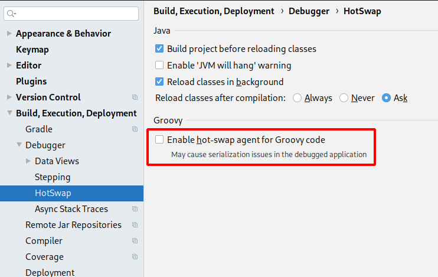
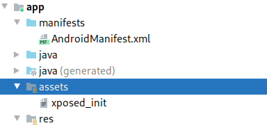
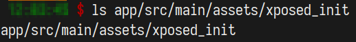
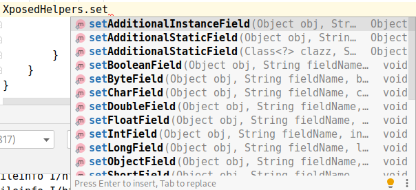

起因
近期要对Xposed模块进行开发，然后需要了解下一些函数的用法
Tips
-
可以使用阿里maven源加速
-
在File -> Settings -> Build, Execution, Deployment -> Debugger -> HotSwap 中取消Enable，这样才可以直接Run，官方文档说的，以前叫Instant Run.

-
同样在官方文档要使用provided包含Xposed的API而不能是implementation
一些使用
模块构建
在AndroidManifest.xml中添加一些字段，使得Xposed框架能够识别为Xposed模块，在application中添加。
<meta-data
android:name="xposedmodule"
android:value="true" />
<meta-data
android:name="xposeddescription"
android:value="Example MOdule" />
<meta-data
android:name="xposedminversion"
android:value="82" />
你写一个类，在Somewhere，里面就有Hook函数。新建或找到assets文件夹，有的看起来是和java同一层实际上是在src/main/中
 
每次模块更新记得reboot
对Hook函数
Hook静态变量
Class cla = XposedHelpers.findClass(claName, loadPackageParam.classLoader);
XposedHelpers.setStaticBooleanField(cla, fieldName, val);
其他set函数

Hook修改方法返回值
XposedHelpers.findAndHookMethod(class, method, new XC_MethodHook() {
protected void afterHookedMethod(MethodHookParam param) throws Throwable {
param.setResult(result); // 设置返回值
}
});
Hook获取方法返回值
XposedHelpers.findAndHookMethod(class, method, new XC_MethodHook() {
protected void afterHookedMethod(MethodHookParam param) throws Throwable {
param.getResult(result); // 获取返回值
}
});
Hook获取方法传入参数
XposedHelpers.findAndHookMethod(class, method, new XC_MethodHook() {
protected void afterHookedMethod(MethodHookParam param) throws Throwable {
XposedBridge.log(param.args[0]); //第0个参数
XposedBridge.log(param.args[1]);
XposedBridge.log(param.args[2]);
}
});
Hook给方法传参
Class cla = XposedHelpers.findClass(className, loadPackageParam.classLoader);
Object com = XposedHelpers.callStaticMethod(cla, "getInstance");
XposedHelpers.callMethod(com, "setDebug", true); // 传入指定值
*Hook获取Intent的值
private void hookGetIntent(XC_LoadPackage.LoadPackageParam loadPackageParam) {
XposedHelpers.findAndHookMethod("android.app.Activity", loadPackageParam.classLoader, "getIntent", new XC_MethodHook() {
@Override
protected void afterHookedMethod(MethodHookParam param) throws Throwable {
Intent sou = (Intent) param.getResult();
KLog.d("hookGetIntent:" + sou.toURI().toString());
}
});
}
*Hook发送Intent信息
private void hookGetIntent(XC_LoadPackage.LoadPackageParam loadPackageParam) {
XposedHelpers.findAndHookMethod("android.app.ContextWrapper", loadPackageParam.classLoader, "sendBroadcast", new XC_MethodHook() {
@Override
protected void afterHookedMethod(MethodHookParam param) throws Throwable {
Intent sou = (Intent) param.args[0];
KLog.d("sendBroadcast:" + sou.toURI().toString());
}
});
}
*多Dex问题
一个App有多个Dex文件的话，可能导致类名路径正确但是却无法找到类，这时需要获取Dex文件的上下文环境。
Android在加载Dex文件后会创建Activity类，然后调用attach方法，调用时的参数为上下文Context。同时该方法是Final方法（不可被子类覆写），不会因为被覆盖而Hook失效，利用上下文获取Classload，随后Hook到Multidex的类。
XposedHelpers.findAndHookMethod(Application.class, "attach", Context.class, new XC_MethodHook() {
@Override
protected void afterHookedMethod(MethodHookParam param) throws Throwable {
ClassLoader cl = ((Context) param.args[0]).getClassLoader(); // 获取ClassLoader
Class<?> hookClass = null;
hookClass = cl.loadClass(claName); // 获取Class
// 使用cl 和 hookClass 完成hook
XposedHelpers.setStaticIntField(hookClass, fieldName, val);
XposedHelpers.findAndHookMethod(claName, cl, "i", String.class, String.class, Object[].class, new XC_MethodHook() {
@Override
protected void afterHookedMethod(MethodHookParam param) throws Throwable {
XposedBridge.log(TAG + param.args[0]);
XposedBridge.log(TAG + param.args[1]);
XposedBridge.log(TAG + param.args[2]);
}
});
}
});
引用
- *表示没有使用过还